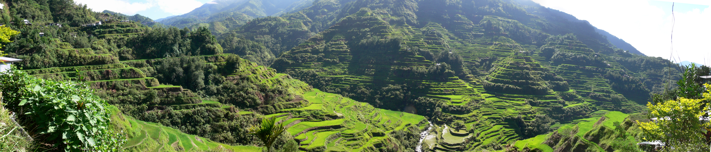

Biais sociaux au soleil
Koh-Lanta est une émission de télé-réalité diffusée par TF1 où une vingtaine de candidats sont envoyés sur une île déserte pour y survivre pendant environ 40 jours. Au cours de ces quarante jours, ils devront relever différentes épreuves physiques pour garder leur place dans l'aventure.
Les épreuves sont généralement divisées en deux types: des épreuves de confort, qui permettent de gagner un avantage dans l'aventure (nourriture, outils,...) et les épreuves d'immunité qui permettent de se protéger de l'élimination.
Après une épreuve d'immunité a lieu un Conseil, dans lequel les aventuriers décident de qui éliminer.
L'émission se décompose en plusieurs étapes.
Koh-Lanta est une émission diffusée depuis 25 ans. Il existe deux types de saisons : les saisons classiques, avec des candidats anonymes, et les saisons « All Stars », avec des candidats ayant déjà participé. Certaines saisons ont mélangé les deux : Le Choc des Héros (2010) mettait en concurrence des anciens de Koh-Lanta avec des sportifs de haut niveau. Cette saison est comptabilisée comme All Stars. Dans l'Île des Héros (2020) et dans La Tribu Maudite (2024), quelques anciens candidats reviennent. Puisqu'ils ne représentent pas la majorité des candidats, ces saisons sont comptabilisées comme classiques.
Bleu : saisons classiques ; jaune : saisons All Stars.

Deux éditions ont vu leurs candidats être séparés en tribus selon leur lieu d'origine. Cette séparation révèle les différences de densité entre les origines. Le Nord et le Sud, très denses, regroupent peu de départements, tandis que l'Est et l'Ouest doivent s'étendre sur de plus grandes zones.
Les barres empilées regroupent les âges par tranches de trois ans et par genre. Survolez ou sélectionnez une tranche pour afficher les candidats. Les moyennes et les taux portent sur les participations dont l'âge est connu.
Concentrons-nous sur les premiers éliminés de l'aventure. Est considéré comme premier éliminé tout aventurier qui a été éliminé au premier conseil de son équipe (donc pas sur un abandon). On ne prend pas en compte les saisons avec 4 équipes initiales. Pour chaque équipe des saisons à deux ou trois tribus, on retient le candidat non-abandonnant le moins bien classé. Les répartitions par tranche d'âge excluent les âges inconnus. Pour chaque genre, les premiers éliminés sont comparés à l'ensemble des participations de ce genre. Ces répartitions ne représentent pas directement une probabilité d'élimination.
Ici on regarde la répartition genrée des candidats aux étapes clé du jeu. On ne regarde que les saisons classiques pour l'instant. Les candidats de retour ne sont pas pris en compte dans les données sur l'ensemble des candidats. Cependant, ils sont pris en compte dans les données sur l'orientation, les poteaux et les gagnants.
À l'orientation, les candidats qui n'atteignent pas les poteaux sont éliminés sur une épreuve de performance. Les troisièmes au classement sont généralement éliminés par le choix d'un autre candidat, et les éliminations aux ambassadeurs résultent d'un choix entre candidats. Cela fait-il une différence ? Le classement inclut aussi « Totem Maudit », dont la finale comptait trois personnes.
Les éliminations par épreuves sont paritaires, tandis que celles sur choix ciblent plutôt des hommes. Cela peut s'expliquer par une volonté stratégique de cibler des personnes perçues comme « plus fortes ».
Après l'épreuve des poteaux, il ne reste que deux candidat-e-s. Ceux précédemment éliminés votent pour déterminer le-a gagnant-e.
Seuls les candidats classés 1er ou 2e sont retenus. La saison « Totem Maudit » est exclue car sa finale comptait trois personnes. Les gagnant-e-s sont indiqués ; les égalités sont comptées séparément.
Malgré les biais liés à l’âge lors de la première élimination, ils ne se reproduisent pas forcément à la finale. Une explication peut être que, les candidats ayant eu l’occasion de faire leur preuve, les biais sociaux reculent.
Les trois femmes et les trois hommes ayant effectué le plus de retours sont présentés avec les ex æquo. Les participations non identifiées sont exclues.
Maintenant intéressons-nous aux statistiques des All Stars : puisque les candidats se connaissent déjà entre eux, les dynamiques peuvent différer.
Pour les premières personnes éliminées, les femmes sont encore une fois beaucoup plus visées que les hommes.
Quand on s'intéresse à l'accès à l'orientation, les hommes sont ultra-majoritaires, de même pour les gagnants. Cependant, puisqu'il y a eu moins de saisons (et donc de participations), ces données sont moins fiables que pour les saisons classiques.
La question du meilleur aventurier de Koh-Lanta revient souvent. On classe les candidats revenus au moins une fois par nombre de victoires, puis par taux d'accès à l'orientation, nombre d'orientations et écart de temps entre la première et la dernière orientation. Pour les candidats ayant atteint moins de deux orientations, on départage ensuite selon leur meilleur classement lors d'un retour.
Les sources sont les pages Wikipédia de chaque saison. Si la page en français n’existe pas, on utilise celle en anglais. On complète les informations grâce aux pages Fandom.com de chaque saison.
Photo de l'en-tête : Anton Leddin / Wikimedia Commons, CC BY-SA 3.0. Recadrée et assombrie à l'affichage.